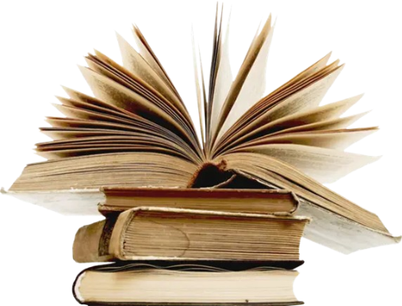

Іван Франко народився 27 серпня 1856 року в сім’ї коваля і ще з дитинства проявляв велику любов до книг
та навчання. Після смерті батька він втратив фінансову підтримку, але завдяки своїй неймовірній
наполегливості продовжив освіту, здобуваючи знання самостійно та працюючи вчителем.
Франко зазнав багатьох переслідувань через свою політичну та соціальну діяльність. У 1877 році його
навіть арештували за підозру у зв'язках з соціалістами. Його творчість була дуже різноманітною—від
поезії до наукових праць, від публіцистики до драматургії. Він писав на теми, що торкалися
української національної ідентичності, соціальної справедливості та необхідності освіти.
Франко мав дружину Ольгу Хоружинську, з якою виховував чотирьох дітей. Попри всі труднощі, його
завзятість і праця забезпечили йому місце серед найвеличніших українських митців. Наприкінці свого
життя Іван Франко страждав на тяжкі хвороби і помер 28 травня 1916 року. Його спадок залишається
невичерпним джерелом натхнення для багатьох поколінь українців.
Освіта та творча діяльність
1862-1864: навчався в Ясениці-Сільній.
1864-1867: навчався в Дрогобичі.
1875: закінчив Дрогобицьку гімназію.
1875-1879: навчався в Львівському університеті, де вивчав філософію та право.
1880: почав працювати вчителем у Львові.
1881: переїхав до Чернівців, де працював учителем.
1882: повернувся до Львова, де працював учителем та писав для різних газет та
журналів.
1884: став редактором газети "Діло".
1890: заснував Українське Наукове Товариство у Львові.
1895: став редактором журналу "Зоря".
1898: став редактором газети "Літературно-науковий вістник".
1904: став редактором газети "Світ".
1905: став редактором газети "Діло".
1916: помер у Львові.

Основні Твори
Чого являєшся мені у сні?
Твої очі, як те море
Дрімають села
Чим пісня жива?
У долині село лежить
Не минай з погордою
Хоч ти не будеш цвіткою цвісти
Місяцю, князю